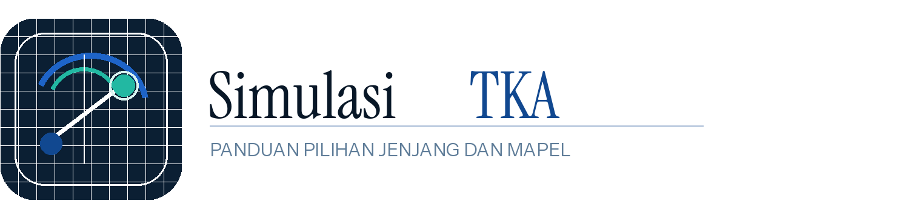

Simulasi TKA SMA
Jenjang SMA atau sederajat memiliki mata pelajaran wajib dan mata pelajaran pilihan. Ini adalah kombinasi dengan variasi mapel paling banyak pada referensi resmi.

Panduan Mandiri untuk Ayo Coba TKA
Halaman ini membantu Anda melihat jenjang, kelompok mata pelajaran, dan pilihan mapel untuk ayo coba TKA. Jika Anda mencari simulasi TKA SMA, simulasi TKA SMP, atau simulasi TKA SD, gunakan ringkasan ini terlebih dahulu lalu lanjutkan ke simulasi resmi Pusmendik.
Pilihan Terkurasi
Daftar di bawah ini diringkas dari halaman referensi resmi agar Anda bisa memahami struktur pilihannya lebih cepat.
Jenjang TKA
Bagian ini merangkum bentuk pilihan yang tampil pada referensi resmi, sehingga pengguna yang mencari ayo coba TKA bisa langsung memahami jenjang yang relevan.
Jenjang SMA atau sederajat memiliki mata pelajaran wajib dan mata pelajaran pilihan. Ini adalah kombinasi dengan variasi mapel paling banyak pada referensi resmi.
Jenjang SMP atau sederajat saat ini menampilkan mata pelajaran wajib. Pada pengecekan referensi 24 April 2026, mata pelajaran pilihan belum tersedia.
Jenjang SD atau sederajat juga menampilkan mata pelajaran wajib. Halaman ini membantu Anda memeriksa opsi tersebut sebelum membuka situs resmi.
Semua alur ujicoba tetap berjalan di situs resmi Pusmendik. Situs ini hanya berfungsi sebagai panduan mandiri dan titik masuk yang lebih mudah dipahami.
Daftar Mapel
Daftar akan berubah secara otomatis sesuai jenjang dan kelompok mata pelajaran yang Anda pilih.
Cara Pakai
Pilih SMA, SMP, atau SD sesuai jenjang yang relevan dengan kebutuhan simulasi Anda.
Lihat apakah jenjang tersebut memiliki mata pelajaran wajib saja atau juga menyediakan pilihan.
Gunakan tombol resmi untuk melanjutkan proses simulasi di halaman referensi Pusmendik.
Sumber Resmi
Referensi utama yang digunakan adalah halaman resmi Simulasi TKA milik Pusmendik. Setelah memahami struktur pilihannya di sini, Anda tetap perlu melanjutkan ke domain resmi untuk membuka simulasi.
URL rujukan: https://pusmendik.kemdikbud.go.id/tka/simulasi_tka
Pemeriksaan terakhir untuk struktur jenjang dan mapel dilakukan pada 24 April 2026.
Catatan
Fokus halaman ini adalah navigasi, penjelasan, dan keterbacaan SEO untuk kata kunci `simulasi tka`.
FAQ
Tidak. Situs ini hanya merangkum pilihan pada referensi resmi dan mengarahkan Anda ke situs resmi.
SMA atau sederajat, SMP atau sederajat, dan SD atau sederajat tersedia pada referensi yang kami cek.
Tidak pada referensi 24 April 2026. Kedua jenjang tersebut hanya menampilkan mata pelajaran wajib.
Tidak. Proses simulasi tidak dijalankan di situs ini. Gunakan tombol resmi untuk melanjutkan.